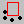
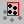
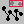
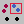
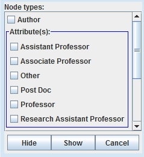
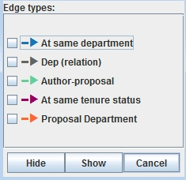
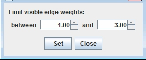

Click the  icon in the toolbar; this command will remove the selected node(s) from the visualization.
See Node Selection and Deselection to learn how to select your desired node(s).
Click the  icon in the toolbar; now only selected nodes will appear in the visualization.
See Node Selection and Deselection to learn how to select your desired node(s).
By clicking the  icon in the toolbar, all isolated nodes will be removed.
Hide/Show Selected Node Type/Attribute
By clicking the  icon in the toolbar, a dialog box will be displayed.

From this dialog box, you can select which node type(s) or attribute(s) you want to be hiding or showing in the visualization.
By clicking the icon in the toolbar, a dialog box will be displayed.

From this dialog box, you can select which edge type(s) you want to be hiding or showing in the visualization.
This function is used to filter edges with desired strength. By clicking the icon in the toolbar, a dialog box will be displayed.

From this dialog box, you can set the range of strengths and filter the edges by this range.
By clicking the icon in the toolbar, all nodes and edges will be shown. Each node will be located where is was last displayed on the screen.
This function allows you to return to your saved network. The command button for this function is .
Note: This button will only be available when you open a saved network!
To obtain technical support, please send email to: ciknow@northwestern.edu